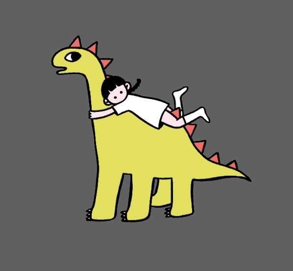
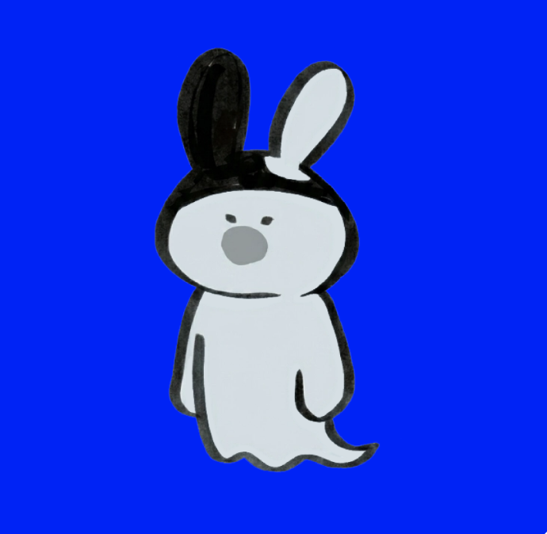

People and Roles
The Collective Is Made Through Its Members
Each member brings a distinct practice, rhythm, and set of questions into M³. Together we build a collective language without asking those differences to disappear.

Structure / Interface / Documentation
Joy Ko
Joy works across collaborative research, visual organization, and digital presentation. Within M³, she helps gather scattered ideas and translate them into forms that can be shared publicly without flattening their differences.
collaborative research
web storytelling
interface structure
documentation
Contribution to the collective
Joy helps shape the collective's public-facing framework, building readable structures that still leave room for multiple voices, unfinished threads, and evolving forms.
Contact: jouhsuanko@gmail.com
Painting / Narrative / Deviation
Vicky Han
Vicky studied Painting at Savannah College of Art and Design, where she developed a strong control over instinct and emotion. At Pratt Institute, she moved beyond expression and toward the control of interpretation itself, creating work that appears coherent yet never fully stabilizes.
painting
narrative restructuring
ambiguity
critical deviation
Contribution to the collective
Vicky brings a sharp commitment to complexity, pushing the collective to resist easy coherence and remain open to unstable readings, interpretive friction, and productive uncertainty.
Contact: available on request

Interaction / Systems / Ethics
Vayne Hu
Vayne focuses on IP, animation, games, and AI-related projects. He is especially interested in the ethical and moral questions embedded within these systems, using them as starting points for work that invites reflection, interaction, and rethinking.
games
animation
AI ethics
interactive media
Contribution to the collective
Vayne expands the collective through system-based thinking and participatory formats, helping M³ translate its ideas into experiences people can move through, test, and question directly.
Contact: available on request